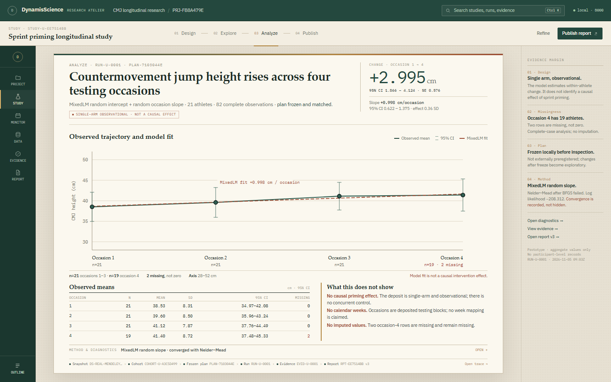
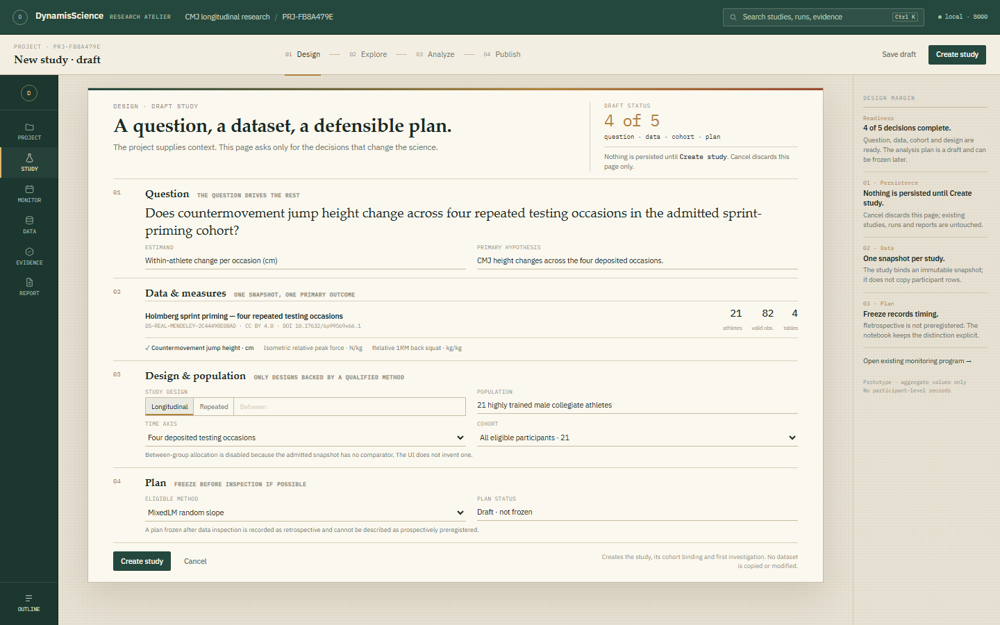
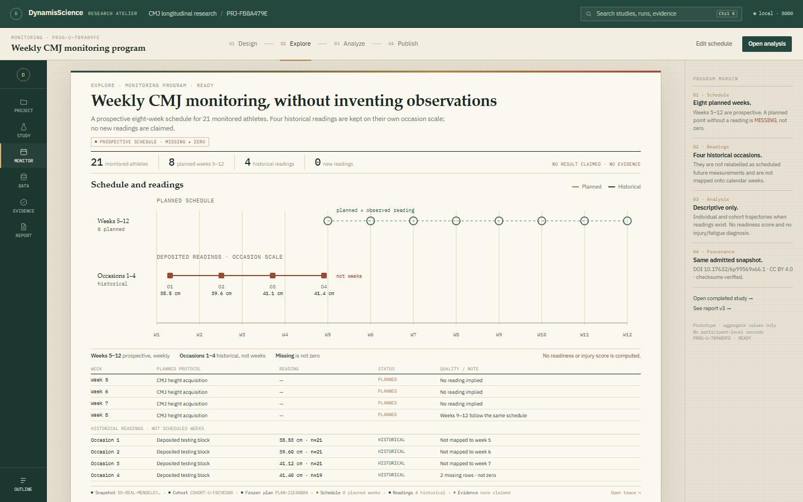
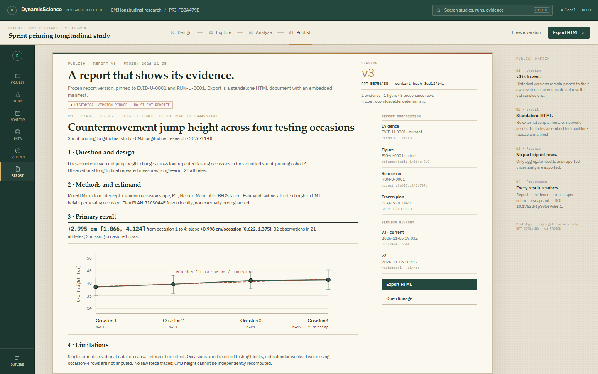
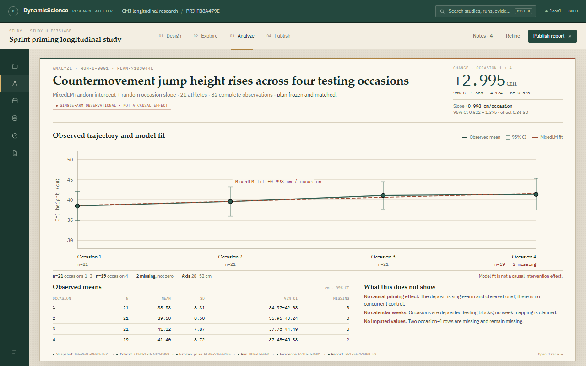

RES-588 · owner-requested synthesis · Direction D
The Research Atelier
A synthesis of Direction A’s activity modes, Direction B’s editorial margin and Direction C’s object thread — reduced to one calm, result-first studio. The same real study, the same aggregate values, no production change.

Analyze · the finding is the page986 × 300 px plot on the first screen; a human-readable finding headline; a quiet evidence margin instead of a permanent inspector.

Design · one protocol pageQuestion, data, design and plan read as one research protocol, not a wizard or a card grid. Readiness lives in the margin.

Explore · monitoring with honest lanesPlanned weeks 5–12 and historical occasions 1–4 remain visibly separate. No readiness score, no invented readings.

Publish · the report is the artefactFrozen report v3 shown as a real document; evidence, version history and export provenance sit beside it, not over it.

Compact · 1280 × 800The thread becomes icons, the evidence margin folds into a 300 px Notes drawer, and the plot still grows to 1114 × 280 px.
The synthesis
A keeps the activity model. B keeps the margin. C keeps the thread. All three give up their extra chrome.
One project context. Four quiet activities. A large plot. Three honest notes. One trace. No permanent inspector, no tab forest, no block document.
InsightfulThe heading states the finding; the plaque states uncertainty; “What this does not show” is part of the page.
IntuitiveDesign → Explore → Analyze → Publish; project → study → program; no implementation vocabulary.
Non-invasive84 px thread, 212 px evidence margin, no permanent inspector. Method opens only when asked.
RenaissanceWarm paper, humanist serif, measured hairlines, brass and ink — a reading room with scientific instruments.
Prototype only · aggregate values from RUN-U-0001 · no participant-level records · production UI untouched · RES-588 remains In Progress.